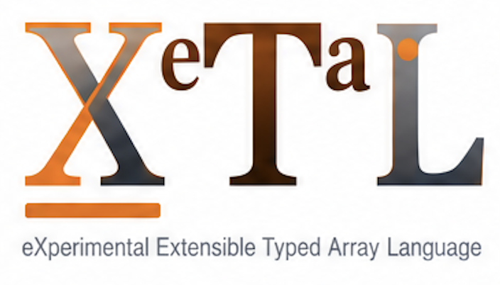

Run the demos yourself
Every one of the ML demos also runs at the command line, by the X_eTaL commit the repository pins: each statement of the program, drawn as X_eTaL renders it, then its result. A demo that runs only at the command line is shown recorded below; the interactive ones are live in the browser.
From a clone
You need Rust (stable), git and just. The
repository pins the X_eTaL commit it is known to work with
(f7f9821); just xetal fetches and builds
exactly that one, so nothing else is installed.
git clone https://github.com/softwarewrighter/X_eTaL-ML cd X_eTaL-ML just xetal # fetch and build the pinned X_eTaL (once, a few minutes) just demos # the demos just tour cnn-digits # a demo, paced: each statement, then its result just run cnn-digits # just the results just show cnn-digits # every statement, unclipped just serve cnn-digits # its page, at http://127.0.0.1:8435/ just bench # how fast the ML workloads run
Every demo has a live page now (the catalog), so none is shown recorded; each one still runs at the command line as above.